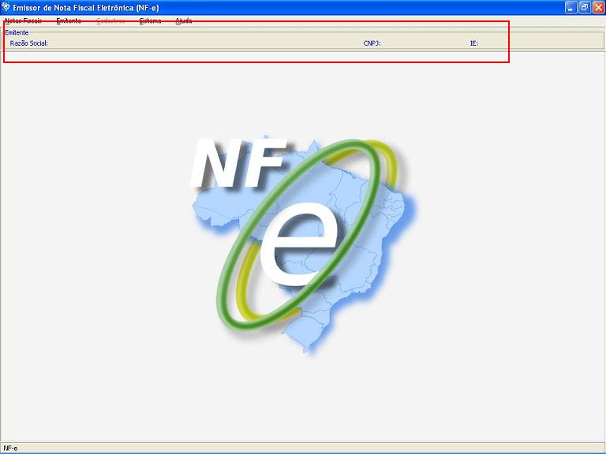

Software Emissor NF-e
Saindo do emitente iniciado e selecionando outro emitente
Opção para seleção de outro emitente, se necessário..
- Apenas para sair do emitente iniciado, acessar no menu Emitente -> Sair do Emitente Atual.
Os dados do emitente (Razão social, CNPJ e IE) não
serão mais exibidos na barra superior de
informações, indicando que não há
emitente selecionado.
- Para a seleção de outro emitente, acessar no menu Emitente -> Selecionar Emitente. Esta opção irá sair do emitente iniciado, caso haja algum iniciado.
- Na tela de pesquisa e seleção de emitente, buscar e selecionar o emitente a ser iniciado.
- Após a seleção do emitente a ser iniciado, clicar em Iniciar
Quando o emitente não está inicado, a barra superior não apresentará dados:
